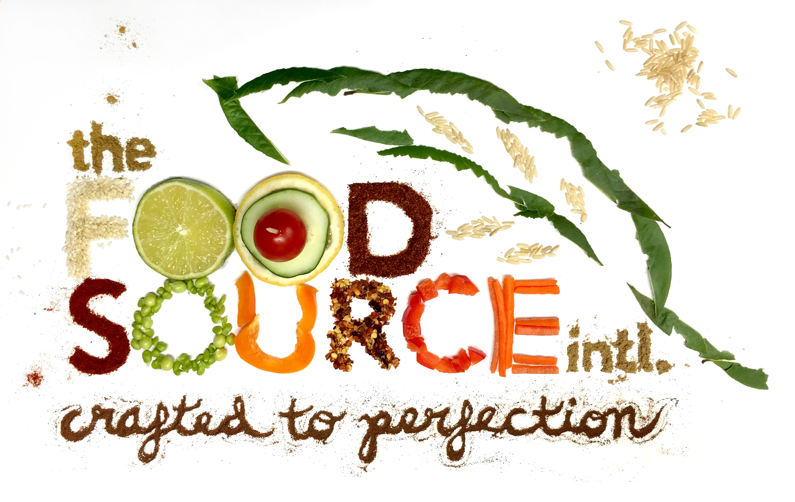
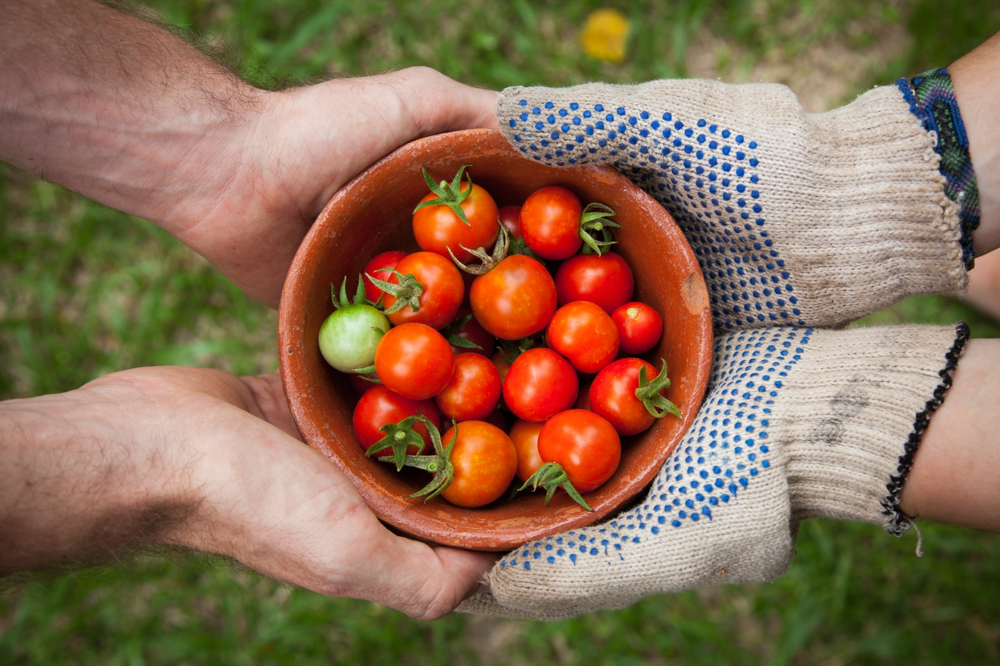
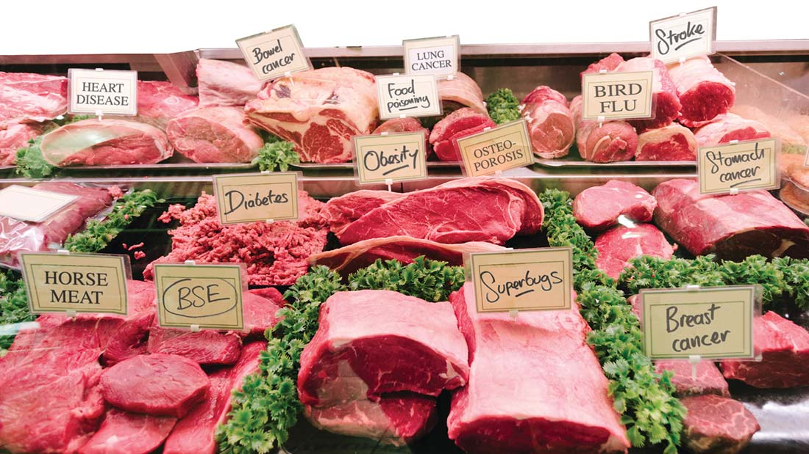
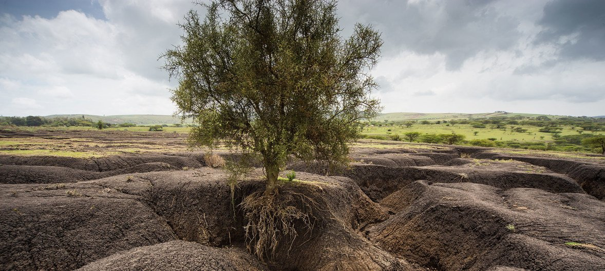
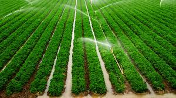
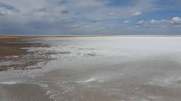

About Us

Food production, processing, and marketing systems in developing countries are complex. The food production systems are highly fragmented and dependent on a large number of small-scale producers. The current farm structure constrains farmer's capacity to meet domestic and international food safety standards. Although this may have socioeconomic benefits as large quantities of food pass through a multitude of food handlers and middlemen, the risk of exposing food to unhygienic environments, contamination, and adulteration increases. Literacy rate for most farmers and food handlers in developing countries is low; this limits the number of farmers capable of adopting more sophisticated modern agricultural practices, food hygiene, and good food handling practices necessary to meet more stringent food safety requirements.
Sources of Food
-


- PLANT SOURCE
- ANIMAL PRODUCTS
- PILLS AS SOURCE
Effects of Modern Agriculture
Soil erosion
Raindrops bombarding bare soil result in the oldest and still most serious problem of agriculture. The long history of soil erosion and its impact on civilization is one of devastation. Eroded fields record our failure as land stewards.
Irrigation
Adequate rainfall is never guaranteed for the dry land farmer in arid and semiarid regions, and thus irrigation is essential for reliable production. Irrigation ensures sufficient water when needed and also allows farmers to expand their acreage of suitable cropland. In fact, we rely heavily on crops from irrigated lands.
Salinity
Due to adoption of intensive agriculture practices and increased concentration of soluble salts leads to salinity. Due to poor drainage, dissolved salts accumulate on soil surface and affects soil fertility. Excess concentration of these salts may form a crust on the surface which may injurious to the plants. The water absorption process is affected and uptake of nutrient is disturbed.
Case Studies
1. A study on birth defects in water birds, in Kesterson wildlife refuge in California, indicated that these defects where due to high concentration of selenium.
2. Recent reports from cotton growing belt of Punjab which covers Abohar, Fazalka and part of Bathinda indicates that over use of pesticides for control of insect pest in cotton to enhance productivity has not only affected soil health, but also caused cancer in human being.
3. Diclofenac is the drug for veterinary use to treat the livestocks which have strong residual nature, which leads to high persistence throughout the foodchain .Due to biomagnification it becomes more dangerous to the vultures as they are consumers of diclofenac treated cattle. Diclofenac is responsible for bringing three South Asian species of Gyps vultures to the brink of extinction. It has been banned in India since 2006.